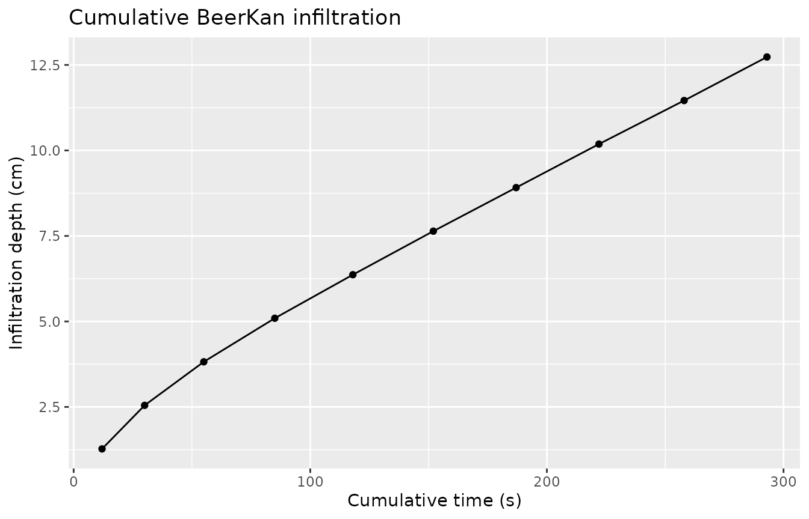

Overview
The BeerKan (Beerkan Estimation of Soil Transfer parameters) protocol is a low-cost field method: a fixed volume of water is poured repeatedly inside a ring, and the time for each pour to completely infiltrate is recorded. Unlike standard ring or Minidisk methods, measurement proceeds at zero pressure head (ponded).
The BEST algorithm (Lassabatère et al., 2006) fits the Haverkamp et al. (1994) quasi-exact implicit infiltration model to the resulting I(t) series, recovering both the saturated hydraulic conductivity Ks and the sorptivity S. The Van Genuchten scale parameter α is then recovered analytically.
| Step | Function |
|---|---|
| Pour events → cumulative I(t) | beerkan_cumulative() |
| VG shape params (n, α) | infiltration_vg_params(..., suction = 0) |
| Philip quick estimate | fit_infiltration() |
| BEST: Ks, S, α | fit_best() |
1. Field data
A BeerKan run pours a fixed 100 mL of water 10 times into a ring (radius 5 cm), recording how long each pour takes to disappear.
run <- tibble(
pour = 1:10,
volume = 100, # mL per pour
time = c(12, 18, 25, 30, 33, 34, 35, 35, 36, 35) # s to infiltrate
)
run
#> # A tibble: 10 × 3
#> pour volume time
#> <int> <dbl> <dbl>
#> 1 1 100 12
#> 2 2 100 18
#> 3 3 100 25
#> 4 4 100 30
#> 5 5 100 33
#> 6 6 100 34
#> 7 7 100 35
#> 8 8 100 35
#> 9 9 100 36
#> 10 10 100 35The infiltration time increases early on (soil is initially dry) then stabilises near 35 s as the soil approaches steady state.
2. Cumulative infiltration
beerkan_cumulative() accumulates both time and volume,
then converts to depth using the ring area.
cum <- beerkan_cumulative(run, volume_col = volume, time_col = time, radius = 5)
cum |> select(pour, volume, time, .cumulative_time, .infiltration)
#> # A tibble: 10 × 5
#> pour volume time .cumulative_time .infiltration
#> <int> <dbl> <dbl> <dbl> <dbl>
#> 1 1 100 12 12 1.27
#> 2 2 100 18 30 2.55
#> 3 3 100 25 55 3.82
#> 4 4 100 30 85 5.09
#> 5 5 100 33 118 6.37
#> 6 6 100 34 152 7.64
#> 7 7 100 35 187 8.91
#> 8 8 100 35 222 10.2
#> 9 9 100 36 258 11.5
#> 10 10 100 35 293 12.7
ggplot(cum, aes(x = .cumulative_time, y = .infiltration)) +
geom_point() +
geom_line() +
labs(title = "Cumulative BeerKan infiltration",
x = "Cumulative time (s)", y = "Infiltration depth (cm)")
The curve transitions from a rapid early phase to a linear steady-state, consistent with the Haverkamp model.
3. VG shape parameters from texture
For BEST we need the Van Genuchten shape parameter n. Since the
experiment runs at zero pressure head, use suction = 0 to
retrieve only the shape parameters (.A will be
NA, which is expected):
soil_meta <- tibble(texture = "loam", theta_s = 0.43, theta_i = 0.12) |>
infiltration_vg_params(texture = texture, suction = 0)
soil_meta |> select(texture, theta_s, theta_i, .n, .alpha, .A)
#> # A tibble: 1 × 6
#> texture theta_s theta_i .n .alpha .A
#> <chr> <dbl> <dbl> <dbl> <dbl> <dbl>
#> 1 loam 0.43 0.12 1.56 0.036 NA4. Philip quick estimate
Before running BEST, a quick Philip two-term fit gives a preliminary sorptivity and conductivity proxy.
philip <- fit_infiltration(cum,
infiltration_col = .infiltration,
sqrt_time_col = .sqrt_time)
philip
#> # A tibble: 1 × 5
#> .C2 .C1 .C2_std_error .C1_std_error .convergence
#> <dbl> <dbl> <dbl> <dbl> <lgl>
#> 1 0.343 0.0235 0.0298 0.00141 TRUEC₁ (0.0235 cm/s) is a rough Ks proxy; BEST will refine this using the full Haverkamp model.
5. BEST algorithm
fit_best() accepts the cumulative I(t) data together
with the soil moisture parameters (theta_s, theta_i) and the VG shape
exponent n.
best <- fit_best(
cum,
infiltration_col = .infiltration,
time_col = .cumulative_time,
theta_s = 0.43,
theta_i = 0.12,
n = soil_meta$.n
)
best
#> # A tibble: 1 × 7
#> .Ks .S .alpha .Ks_std_error .S_std_error .steady_n .convergence
#> <dbl> <dbl> <dbl> <dbl> <dbl> <int> <lgl>
#> 1 0.0360 0.261 1.24 0.000144 0.00215 4 TRUEThe key outputs:
| Parameter | Symbol | Value | Units |
|---|---|---|---|
| Saturated hydraulic conductivity | Ks | 0.036 | cm/s |
| Sorptivity | S | 0.261 | cm/s^0.5 |
| VG scale parameter | α | 1.24 | 1/cm |
6. Comparing BEST methods
Three fitting strategies are available. "steady"
(default) uses the last steady_n = 4 points to define the
steady-state window; "slope" uses the early-time transient
to estimate S independently.
methods <- c("steady", "slope", "intercept")
results <- lapply(methods, function(m) {
fit_best(
cum,
infiltration_col = .infiltration,
time_col = .cumulative_time,
theta_s = 0.43, theta_i = 0.12,
n = soil_meta$.n,
method = m
) |>
mutate(method = m)
}) |>
bind_rows()
results |> select(method, .Ks, .S, .alpha, .convergence)
#> # A tibble: 3 × 5
#> method .Ks .S .alpha .convergence
#> <chr> <dbl> <dbl> <dbl> <lgl>
#> 1 steady 0.0360 0.261 1.24 TRUE
#> 2 slope 0.0360 0.569 0.261 TRUE
#> 3 intercept 0.0360 0.261 1.24 TRUE7. Multi-site workflow
For field campaigns, group by site and process all runs together.
# Per-site soil parameters are embedded as columns so fit_best() can resolve
# them via tidy evaluation within each group.
field_runs <- tibble(
site = rep(c("S1", "S2"), each = 10),
pour = rep(1:10, 2),
volume = 100,
time = c(
12, 18, 25, 30, 33, 34, 35, 35, 36, 35, # S1 — loam
8, 11, 14, 17, 19, 20, 20, 21, 20, 21 # S2 — sandy loam (faster)
),
theta_s = rep(c(0.43, 0.40), each = 10),
theta_i = rep(c(0.12, 0.08), each = 10),
n = rep(c(1.56, 1.89), each = 10)
)
multi_cum <- field_runs |>
group_by(site) |>
beerkan_cumulative(volume_col = volume, time_col = time, radius = 5)
multi_best <- multi_cum |>
group_by(site) |>
fit_best(
infiltration_col = .infiltration,
time_col = .cumulative_time,
theta_s = theta_s,
theta_i = theta_i,
n = n
)
multi_best |> select(site, .Ks, .S, .alpha, .convergence)
#> # A tibble: 2 × 5
#> site .Ks .S .alpha .convergence
#> <chr> <dbl> <dbl> <dbl> <lgl>
#> 1 S1 0.0360 0.261 1.24 TRUE
#> 2 S2 0.0618 0.359 1.21 TRUESite S2 (sandy loam) shows higher Ks, consistent with its coarser texture and faster infiltration times.
References
Haverkamp, R., Ross, P. J., Smettem, K. R. J., & Parlange, J.-Y. (1994). Three-dimensional analysis of infiltration from the disc infiltrometer: 2. Physically based infiltration equation. Water Resources Research, 30(11), 2931–2935.
Lassabatère, L., Angulo-Jaramillo, R., Soria Ugalde, J. M., Cuenca, R., Braud, I., & Haverkamp, R. (2006). Beerkan estimation of soil transfer parameters through infiltration experiments—BEST. Soil Science Society of America Journal, 70(2), 521–532. https://doi.org/10.2136/sssaj2005.0026